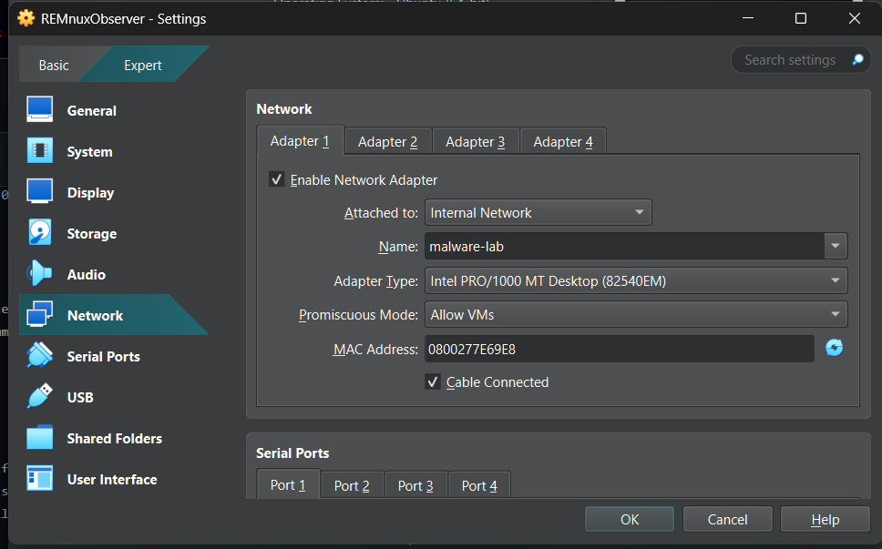
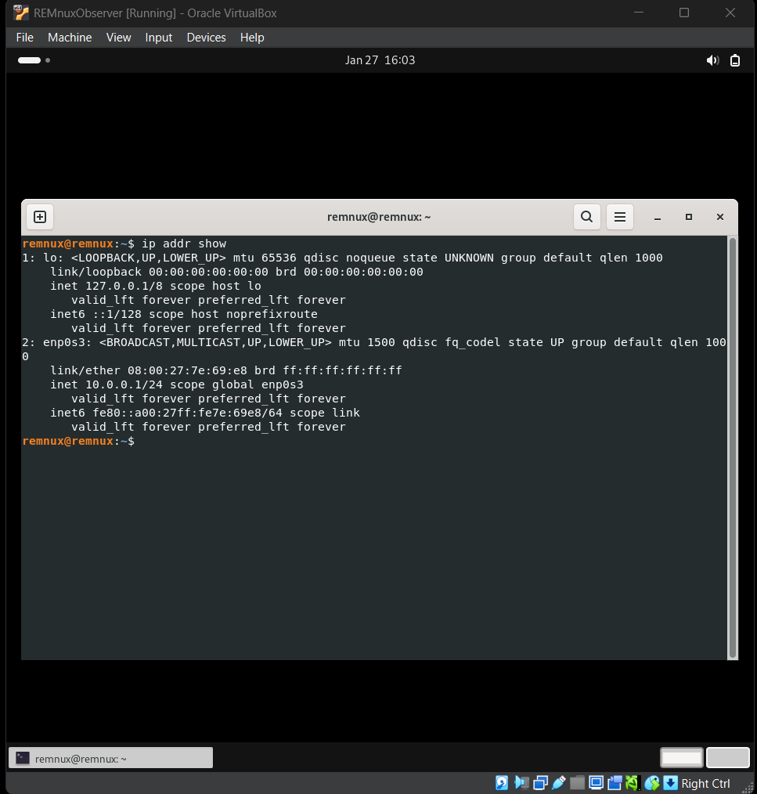

Table of Contents
- 1. Scope and Goals
- 2. Lab Requirements
- 3. Windows 11 Victim Machine Setup
- 4. Tools Installed on Windows 11
- 5. Network Isolation Configuration
- 6. REMnux Observer Machine Setup
- 7. Static IP Address Configuration
- 8. INetSim and Connectivity Verification
- 9. Conclusion
1. Scope and Goals
I built this lab to safely analyze malware using both static and dynamic techniques. The most important design goal was isolation. Malware must never be able to reach the real internet or affect my host operating system.
I chose a two-machine architecture: a Windows victim machine to execute malware, and a REMnux observer machine to monitor network traffic and simulate internet services. This design is widely recommended in malware analysis learning resources.
2. Lab Requirements
The lab had the following requirements:
• Two virtual machines • No NAT, no Bridged networking, no real internet • Windows must believe it is online • REMnux must simulate DNS and HTTP • Traffic must be observable
These requirements ensure malware behaves normally while remaining fully contained.
3. Windows 11 Victim Machine Setup
I created a Windows 11 virtual machine in VirtualBox using the official Windows ISO. I chose Windows 11 because most modern malware targets Windows environments.

After installation, I disabled built-in protections such as: Windows Defender real-time protection, firewall, cloud protection, and SmartScreen.
The reason for disabling these features is that antivirus products can block malware execution, which would prevent proper analysis.


No Microsoft account was used. The machine was kept offline. A clean snapshot was created after setup.
Snapshots are important because they allow restoring the system to a clean state after malware execution.
4. Tools Installed on Windows 11
I installed tools covering different analysis categories:
• String extraction: strings, FLOSS • PE analysis: PEStudio, PEBear, PEView • Reverse engineering: Cutter, x32dbg, x64dbg • .NET analysis: dnSpyEx • Monitoring: Process Hacker, Procmon, TCPView • Networking: Wireshark, ncat • Detection: YARA, capa
I selected these tools because malware analysis requires multiple viewpoints: file structure, strings, memory, processes, and network behavior.

5. Network Isolation Configuration
After installing tools, I powered off the Windows VM and changed its network adapter to:
Internal Network → Name: malware-lab Promiscuous Mode → Allow VMs
Internal Network ensures that only machines inside this virtual network can communicate. There is no route to the real internet.

6. REMnux Observer Machine Setup
I imported the REMnux OVA into VirtualBox and named it REMnuxObserver.
REMnux is a Linux distribution built specifically for malware analysis. It contains many preinstalled tools.
After booting, I updated the system and installed INetSim.
INetSim simulates internet services such as DNS and HTTP. This allows malware to think it is online while remaining isolated.
The REMnux VM was configured with the same Internal Network (malware-lab).
7. Static IP Address Configuration
On REMnux, I identified the interface using:
ip link show
Then I assigned a static IP:
sudo ip addr add 10.0.0.1/24 dev enp0s3
Using a static IP ensures Windows always knows where the fake internet server is.
On Windows, IPv4 was configured manually:
IP: 10.0.0.2 Subnet: 255.255.255.0 Gateway: 10.0.0.1 DNS: 10.0.0.1

8. INetSim and Connectivity Verification
On REMnux I started INetSim using:
sudo inetsim
From Windows I tested connectivity using:
ping 10.0.0.1
Successful ping confirmed communication between the two VMs.
At this point: Windows thinks it is online. All traffic is routed to REMnux. No traffic leaves the lab.

9. Conclusion
I successfully built an isolated malware analysis lab using VirtualBox, Windows 11, and REMnux.
This environment allows malware execution, monitoring, and analysis without exposing the host system or real networks.